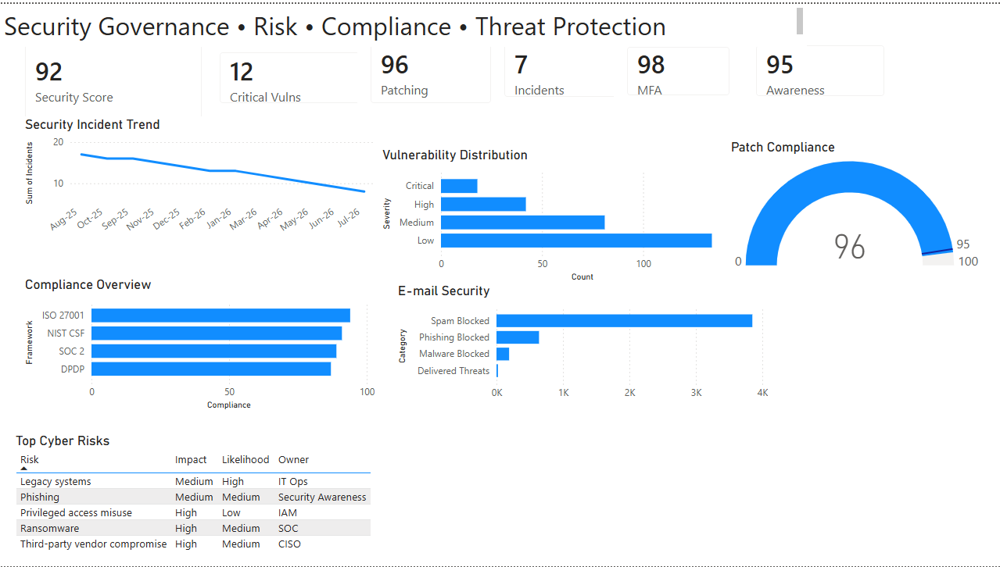

Executive Cybersecurity Dashboard
Security Governance • Risk • Compliance
Designed for CIOs, CISOs and executive leadership, this dashboard provides a consolidated view of enterprise security posture, cyber risk, vulnerability management, compliance and security operations.

Executive Summary
This executive cybersecurity dashboard brings together key security metrics into a single executive view, enabling leadership teams to monitor security posture, vulnerability remediation, patch compliance, phishing resilience, regulatory compliance and enterprise cyber risk.
The dashboard is designed to support strategic decision-making, strengthen governance and help prioritize remediation efforts through clear executive reporting.
Business Value
- Executive visibility into cybersecurity posture
- Monitor vulnerability remediation trends
- Track enterprise patch compliance
- Support cyber risk prioritisation
- Measure security awareness effectiveness
- Strengthen governance reporting
Key Capabilities
- Security Posture Reporting
- Vulnerability Management
- Patch Compliance
- Compliance Monitoring
- Email Security Analytics
- Executive Risk Reporting
Technologies Used
Representative Sample Data
This dashboard uses representative sample data created exclusively for demonstration and portfolio purposes. It does not contain employer, customer, confidential or production information.